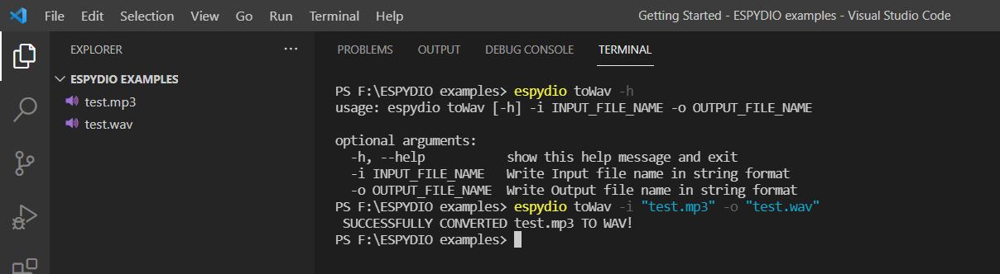
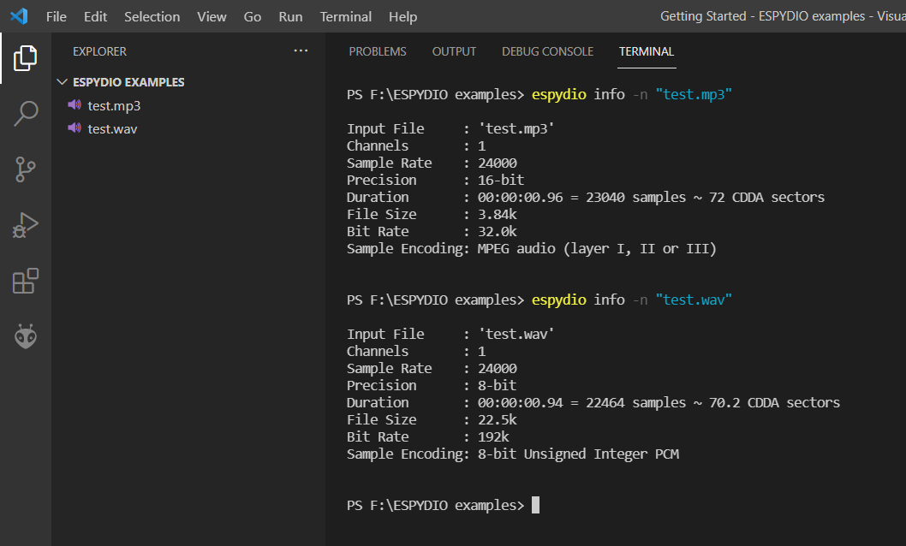

espydio
A command line utility built using python to automate audio file conversions, thereby assisting audio playing on ESP32 (primarily for Tactile Tricorder).
Installation
-
This requires that SoX version 14.4.2 or higher is installed with required handlers for MP3 files (path for excecutable file must be added to environment variables).
-
To install the most up-to-date release of this module via PyPi:
pip install espydio -
To install the master branch:
pip install git+https://github.com/namanPuri/espydio.gitor, Simply clone the git repository and install setup.py.
git clone https://github.com/namanPuri/espydio.git cd espydio python setup.py install
USAGE
Once espydio is installed, open any command-line tool and run :
>espydio
If everything is good upto here, this must be recognised and you will get this as output.
usage: espydio [-h] {info,toWav,toHex,tts,stream,allToWav,allToHex,allToMp3,tth} ...
espydio: error: the following arguments are required: command
i.e.,

espydio - List of Commands
To get a list of commands, in command-line tool itself with short description, you can run
>espydio -h

Command Descriptions and Examples
To get the description of using a particular command you can run:
>espydio <name of command> -h
It will output the command usage and decription of it's required parameters.
1. info
Description: This command can be used to print the details of the given audio file.
Usage: espydio info [-h] -n NAME_OF_FILE
Example:

2. toWav
Description: This command converts the given MP3 or OGG file to WAV format with a sampling rate of 24khz and with sample encoding as 8-bit unsigned-integer PCM.
Usage: espydio toWav [-h] -i INPUT_FILE_NAME -o OUTPUT_FILE_NAME
Example:

Comparing the details of MP3 file and converted Wav file.

3. toHex
Description: This command converts the given WAV file to arduino-ide supported C header file containing the hex codes of the samples stored in an array with the required type qualifier to store the array in flash memory of the controller and not in RAM.
Usage: espydio toHex [-h] -n WAV_FILE_NAME -a ARRAY_NAME -o HEX_FILE_NAME
Example:
C header would like this.

4. tts
Description: This command converts the given text to speech(MP3 format), with the desired language settings.
Usage: espydio tts [-h] -t TEXT -l LANGUAGE -o OUTPUT_MP3_FILE_NAME
Example:
5. stream
Description: Using this command, you can make a server using python and host any MP3 or WAV files of any duration on it. ESP32 can then be programmed to take the data from the server and play the same. You can verify that the server is created by copying the address appended with page to route, and running that address on any browser on same or some different device provided it should be connected to the same network.
Usage: espydio stream [-h] -r PAGE_TO_ROUTE -f FILE_NAME -t FILE_TYPE
Example:
6. allToWav
Description: This command converts all the MP3 files in the given directory to the corresponding WAV files, and store them in a folder with name WAV files in the working directory. The converted WAV files would have a sampling rate of 24khz and sample encoding as 8-bit unsigned-integer PCM. The name of the converted WAV file will be same as that of the MP3 one.
Usage: espydio allToWav [-h] [-i PATH_TO_FOLDER]
Example:
7. allToHex
Description: This command converts all the WAV files in the given directory to their corresponding hex codes and save them in a C-header file. The C-header file generated would have names of all arrays which it contains, commented in the beginning.
Usage: espydio allToHex [-h] [-i PATH_TO_FOLDER] -n HEX_FILE_NAME
Example:
C-header file would look like this:
8. allToMp3
Description: This command converts the given texts or a range of numbers with the given step size and with specified language settings to speech in Mp3 format. The arguments for text and for numbers are mutually exclusive. The files generated would be stored in a folder with name MP3 files in the working directory.
Usage: espydio allToMp3 [-h] (-t TEXT [TEXT ...] | -r ) -l LANGUAGE
Example:
9. tth
Description: This command converts the given texts or a range of numbers with the given step size and with specified language settings to their corresponding hex codes and save them all in a C-header file. The arguments for text and for numbers are mutually exclusive here too. The hex file generated with the given name will save in the folder with name as Hex file in the working directory.
Usage: espydio tth [-h] (-t TEXT [TEXT ...] | -r ) -l LANGUAGE -n HEX_FILE_NAME
Example:
C-header would look like: